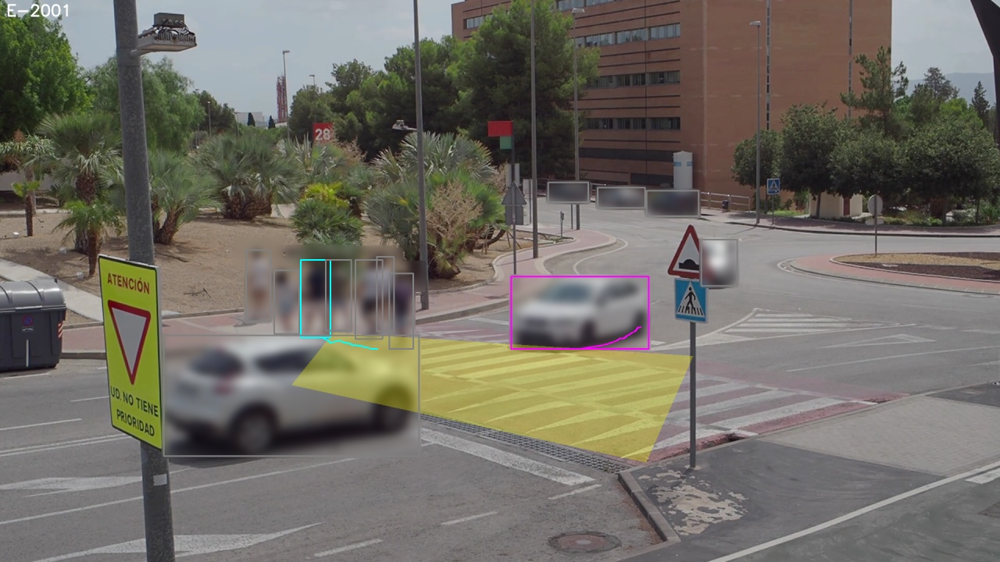
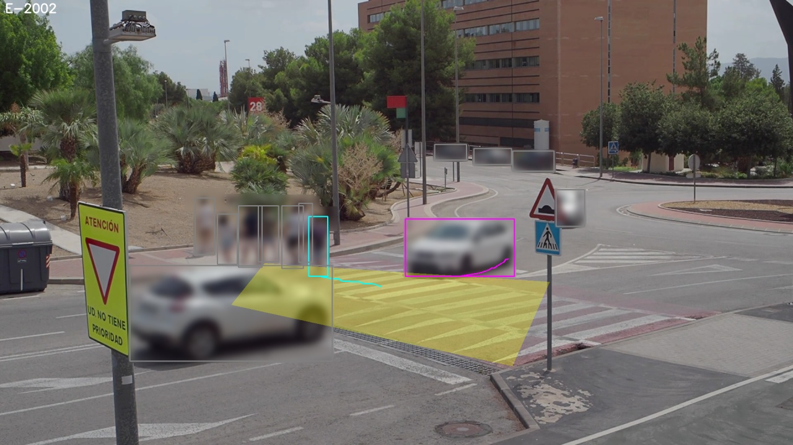
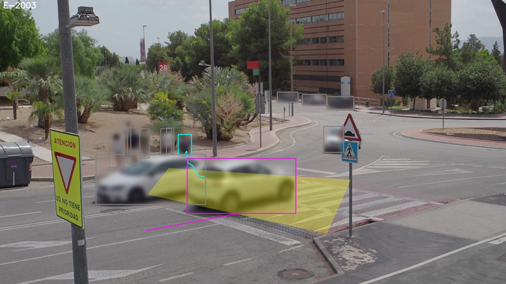
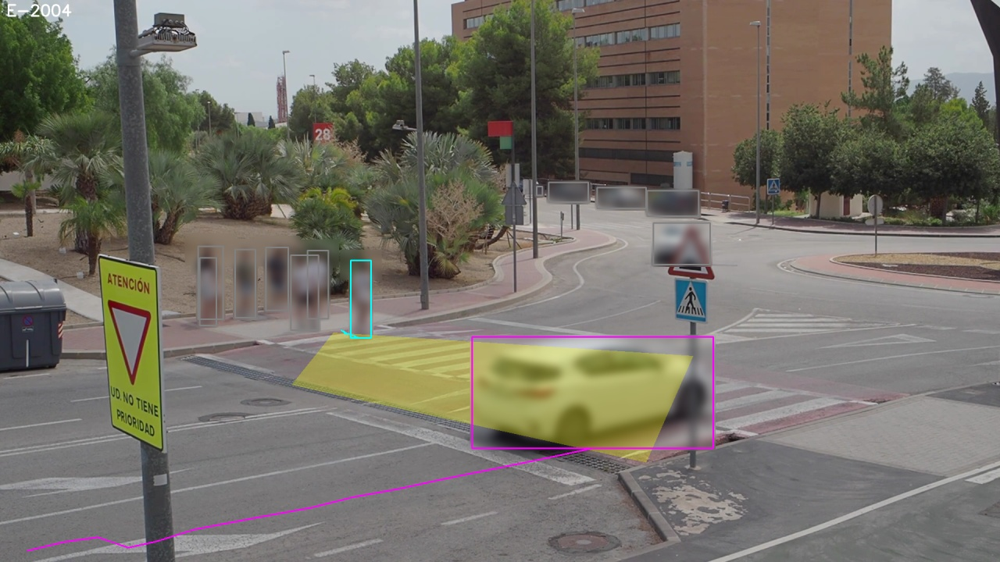
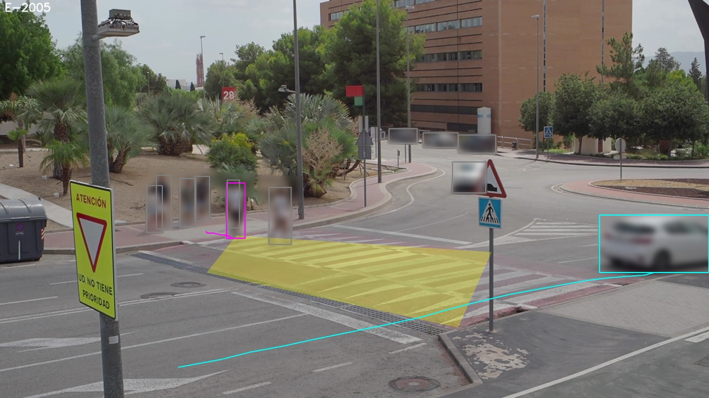
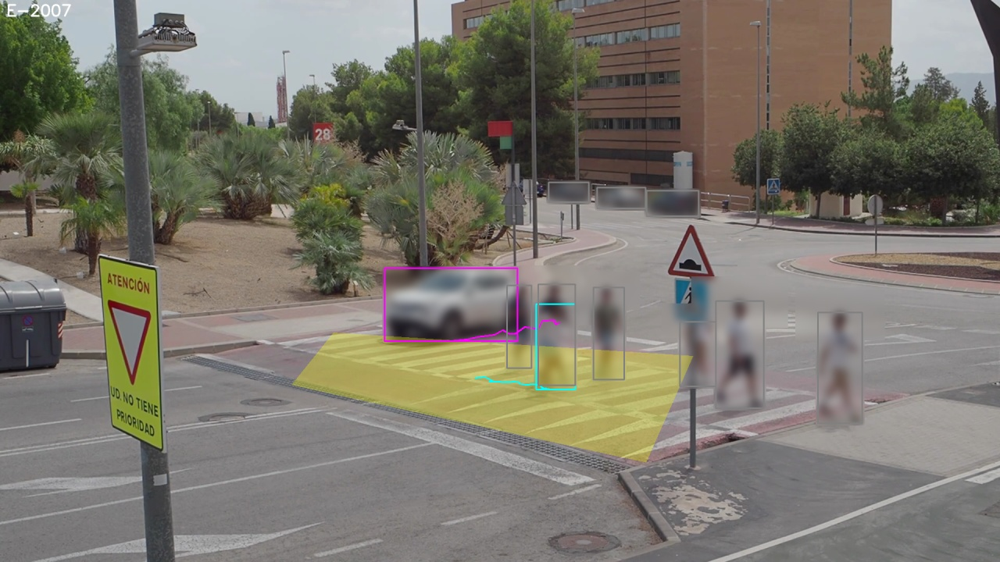

En el cruce hubo 16 choques en 2019–2024 y ningún atropello registrado. Los registros de choques no ven los casi-atropellos. Este cruce es el siguiente paso: todavía no se ha grabado.
Se verificaron candidatos con conflicto entre peatón y vehículo. La causa más frecuente fue peatón esperando. El cruce de la demostración no tiene semáforo, así que no se evalúa un intervalo peatonal adelantado. La decisión queda en manos del equipo de ingeniería.
| evento | PET (s) | nivel | veredicto | códigos | keyframe difuminado |
|---|---|---|---|---|---|
| E-2001 | 0.4 | serious | verified | — |  |
| E-2002 | 0.0 | serious | verified | — |  |
| E-2003 | 1.3 | close | verified | — |  |
| E-2004 | 0.0 | serious | rejected | paths_do_not_cross |  |
| E-2005 | 1.0 | close | rejected | paths_do_not_cross |  |
| E-2006 | 0.2 | serious | rejected | paths_do_not_cross | |
| E-2007 | 0.0 | serious | verified | — |  |
F-01: Zona de conflicto CA-S-SBT. Encuentros verificados: 3. Serios: 2. PET mínimo: 0.0 s.
Tipos: through; causas señaladas: peatón esperando; peatón esperando en acera.
F-02: Zona de conflicto CA-S-SBT. Encuentros verificados: 1. Serios: 1. PET mínimo: 0.0 s.
Tipos: through; causas señaladas: no cede el paso.
El método propone; la decisión es del equipo de ingeniería.
Firma: ____________________ Fecha: __________